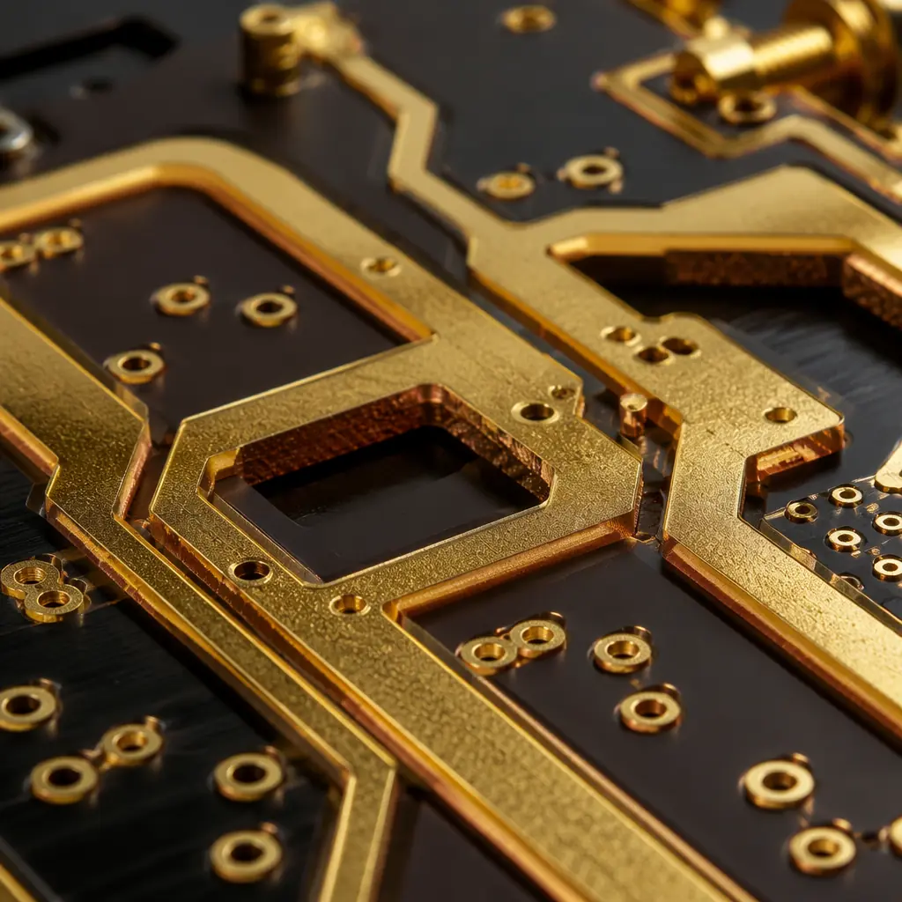
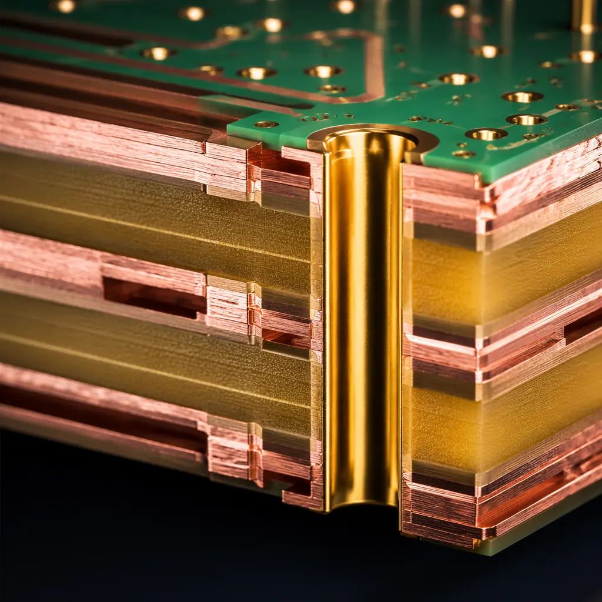

The LEO satellite industry is in the middle of a deployment wave unprecedented in space history. With over 7,000 active Starlink satellites in orbit and competitors like OneWeb, Project Kuiper, and Telesat Lightspeed building their own constellations, the demand for space-qualified PCBs has shifted from boutique radiation-hardened runs of 10 units to production batches of 500-2,000 per program. This changes everything about how satellite PCBs are specified, procured, and manufactured.
At Huaxing PCBA, we apply precision PCB manufacturing — 32-layer capability, 0.075 mm laser-drilled microvias, and IPC Class 3/A assembly — to satellite programs that require production-scale reliability without the traditional space-grade cost multiplier. This article covers the three critical PCB specification domains that determine whether a LEO satellite PCB survives its 5-7 year design life.

Outgassing: Why Standard FR-4 Fails in Vacuum
In the hard vacuum of LEO (10⁻⁶ to 10⁻⁹ Torr at 500-1,200 km altitude), organic materials in standard PCB laminates volatilize — a phenomenon called outgassing. The released compounds condense on cold optical surfaces (star trackers, laser communication terminals, imaging sensors), fogging lenses and degrading signal-to-noise ratios within weeks of deployment.
NASA and ESA quantify outgassing via two parameters per ASTM E595:
| Parameter | Limit | What It Measures |
|---|---|---|
| Total Mass Loss (TML) | < 1.00% | Fraction of material mass lost during 24h at 125°C in vacuum |
| Collected Volatile Condensable Material (CVCM) | < 0.10% | Fraction of outgassed material that re-condenses on a 25°C collector plate |
Standard FR-4 (Tg 130-140°C) typically exceeds both limits — TML values of 1.2-2.5% and CVCM of 0.15-0.40% are common in NASA's outgassing database. For satellite applications, the laminate selection narrows to:
Polyimide (e.g., Arlon 85N, Isola P95) — The Workhorse for LEO
Polyimide laminates achieve TML 0.3-0.7% and CVCM 0.01-0.05%, well within ASTM E595 limits. They also offer superior Z-axis CTE matching to copper, reducing barrel cracking risk during the ±100°C thermal swings each orbit. Our PCB laminate selection guide compares polyimide options across vendors.
PTFE-Ceramic Composites (e.g., Rogers RO4003C, RT/duroid) — RF Payloads
For satellite communication payloads operating at Ku/Ka-band (12-40 GHz), PTFE-ceramic laminates provide both low outgassing and stable dielectric constant across temperature. See our RF PCB manufacturing guide for stackup examples at these frequencies.
Hydrocarbon Ceramic (e.g., Rogers RO4350B) — Digital Processing Boards
For on-board processing and power distribution where RF performance is not critical, hydrocarbon-ceramic laminates offer a cost-effective middle ground — approximately 40-60% cheaper than polyimide while meeting ASTM E595 for non-optical-cavity applications.
Procurement Decision: The laminate choice is the single most consequential PCB decision for satellite programs. Polyimide adds approximately 3-5× material cost over FR-4 but eliminates the risk of optical payload contamination — a failure mode that is impossible to repair in orbit. For LEO constellations where each satellite represents $250K-$1M in launch and operations cost, the laminate premium is negligible compared to mission risk.
Radiation Effects and PCB-Level Mitigation
LEO satellites at 500-600 km altitude experience a total ionizing dose (TID) of approximately 10-50 krad(Si) over a 5-year mission — primarily from trapped protons in the South Atlantic Anomaly (SAA) and solar particle events. While this is far below the 100-300 krad levels seen in GEO or deep-space missions, it is sufficient to degrade unprotected electronics.
PCB-level radiation effects manifest in three ways, and each has a board-level mitigation strategy:
| Effect | Mechanism | PCB Mitigation |
|---|---|---|
| Total Ionizing Dose (TID) | Threshold voltage shift in MOSFETs, increased leakage current | Specify radiation-tolerant components; add guard rings around sensitive analog nodes |
| Single Event Effects (SEE) | Ion strike flips memory bit or latches up CMOS | Wider trace spacing (≥3× minimum) on power rails to handle latch-up current; bulk decoupling capacitance |
| Deep Dielectric Charging | Charge accumulates in PCB laminate, discharges across traces | Conductive grid layer or grounded copper pour on every signal layer to bleed accumulated charge |

For LEO constellations using commercial off-the-shelf (COTS) components with radiation characterization rather than full rad-hard parts, the PCB's role in radiation mitigation becomes even more critical. We recommend designing every power rail with 200% nominal current capacity on trace width — this handles latch-up current pulses without trace fusing. Our PCB trace width and current capacity guide provides the IPC-2152 calculations for this sizing.
Design Rule: For LEO satellite PCBs using COTS components, add a dedicated "radiations mitigation" section to your fabrication drawing specifying: (1) minimum 0.5 mm creepage distance on all power rails, (2) continuous ground pour on every signal layer (no split planes), and (3) ENIG surface finish (prevents tin whisker growth in vacuum — see our lead-free vs leaded solder comparison for vacuum-specific finish recommendations).
Thermal Vacuum Cycling — The Orbit-Day Test
A LEO satellite completes approximately 16 orbits per day, each cycling the PCB assembly from -65°C (eclipse) to +125°C (direct solar exposure) in roughly 45 minutes. Over a 5-year mission, that is 29,200 thermal cycles — equivalent to decades of terrestrial thermal stress concentrated into months.
PCB qualification for LEO thermal cycling requires specific design rules beyond standard IPC Class 3:
Matched CTE Stackup — Z-Axis Expansion Under 3.5%
Select laminate and prepreg with Z-axis CTE within 10 ppm/°C of copper (17 ppm/°C). Mismatch above this threshold causes plated through-hole barrel cracking within 500-1,000 thermal cycles. Our PCB stackup design guide covers CTE matching methodology.
Via Fill — Non-Conductive Epoxy for All Through-Holes
Unfilled vias trap air that expands during the hot phase of each orbit, creating internal stress on the via barrel. Specify non-conductive epoxy via fill for every through-hole — this adds approximately 8-12% to fabrication cost but eliminates the dominant thermal-cycle failure mode.
Copper Weight Derating — 1oz Nominal, 2oz for Power Layers
Thicker copper improves thermal spreading and reduces hot-spot formation during the solar-exposure phase. For power distribution layers, specify 2oz (70 μm) copper; for signal layers, 1oz (35 μm) is adequate. See our PCB copper weight selection guide for the full design trade-space.
For programs requiring formal qualification, we support coupon-level thermal cycling per IPC-TM-650 2.6.8 (Thermal Stress, Convection Reflow) and interconnect stress testing per IPC-TM-650 2.6.26. Our PCB microvia reliability and IST testing guide covers the acceptance criteria.
Production Realities for LEO Constellations
The shift from traditional space-grade manufacturing (10-50 units over 18 months) to constellation-scale production (500-2,000 units per year) changes the PCB procurement strategy in several ways:
Batch Consistency Over Unit Perfection
At constellation volumes, statistical process control (SPC) on plated through-hole wall thickness, impedance tolerance, and registration accuracy matters more than 100% microsection inspection on every board. Our supplier quality scorecard framework defines the SPC parameters to track across production lots.
Panelization for High-Utilization Yield
Polyimide and PTFE laminates cost 3-8× more than FR-4 — panel utilization becomes a dominant cost driver. Our PCB panelization optimization guide covers nesting strategies that maximize material yield for expensive space-grade laminates.
Supply Chain Traceability — Lot-Level to Batch-Level
For constellation programs where each satellite is functionally identical, transitioning from individual-board traceability to batch-level lot control reduces documentation overhead by 60-70% without compromising failure investigation capability. Our certifications and compliance guide covers traceability frameworks for different mission classes.
At Huaxing PCBA, we serve LEO constellation programs with high-layer-count PCB fabrication (up to 32 layers), polyimide and PTFE laminate processing, and IPC Class 3/A assembly with full lot traceability. While we do not provide radiation-hardened ASIC design or formal MIL-SPEC qualification testing, our manufacturing quality system delivers the batch consistency and process control that constellation-scale programs demand. Contact our engineering team to discuss your satellite PCB requirements, or review our aerospace and defense PCB manufacturing overview for related capabilities.